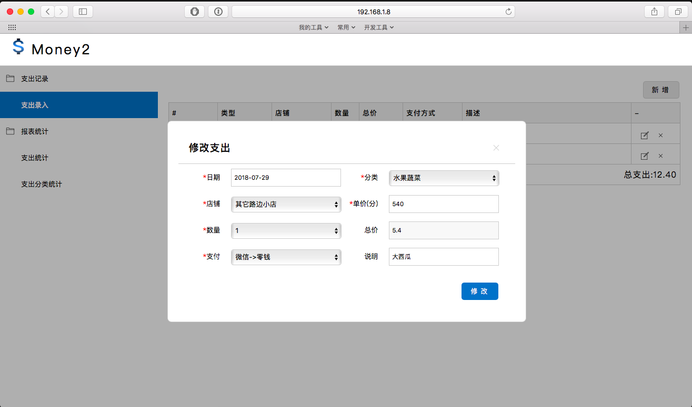
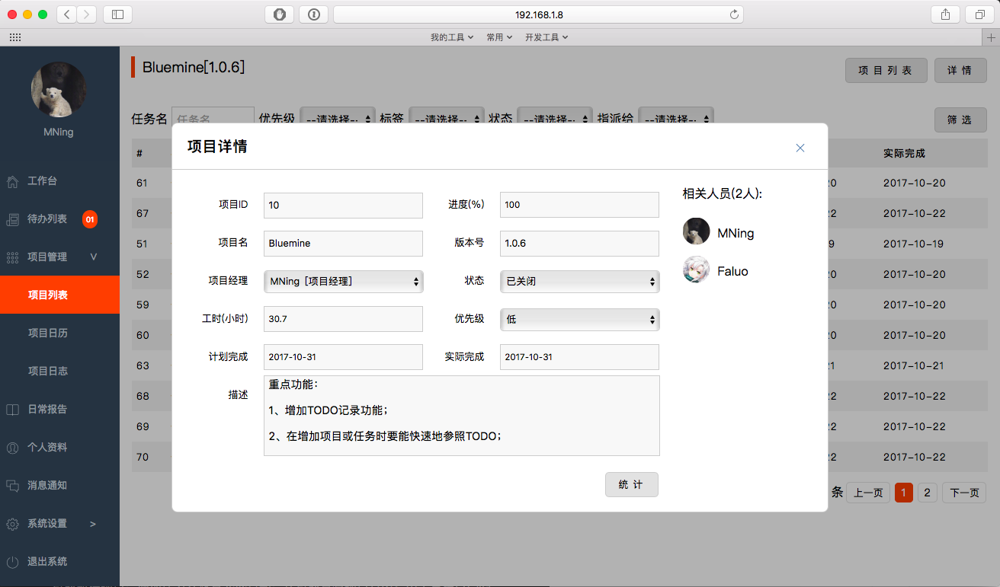
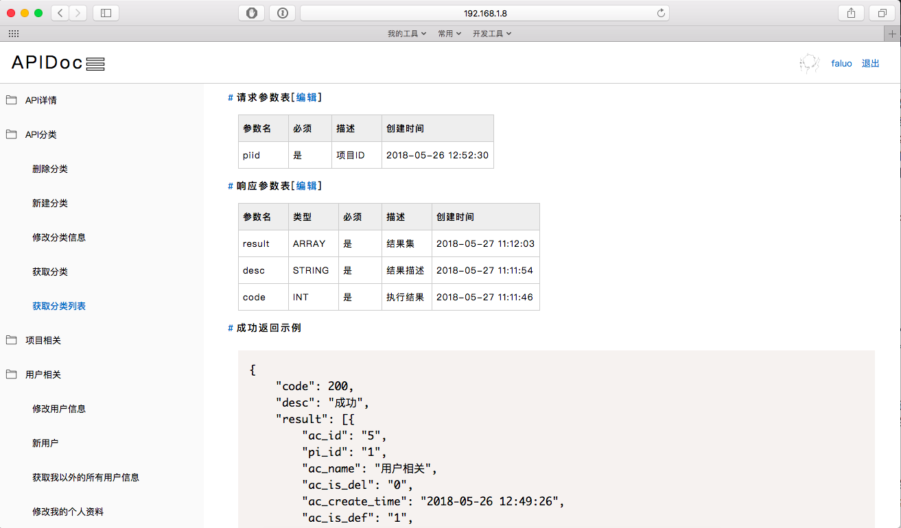
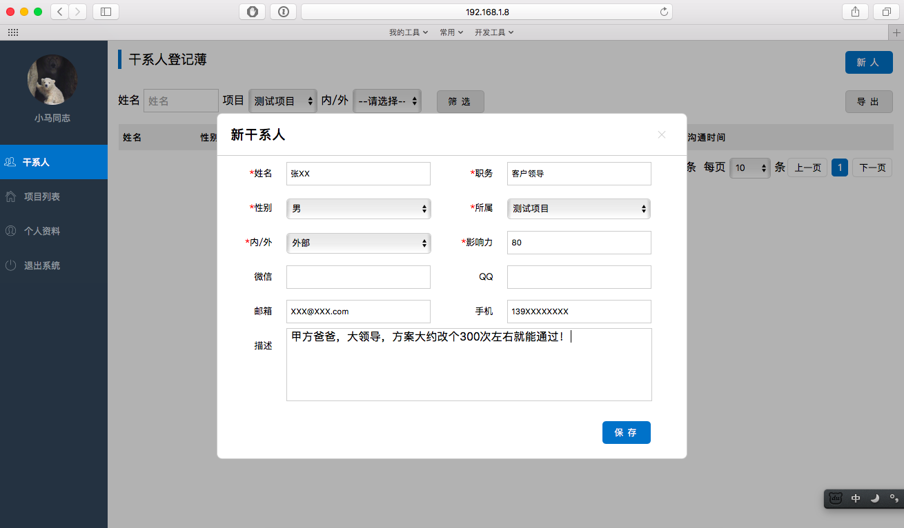

学会编程后到底能做些什么呢？比如，可以到公司应聘成为一名程序员，996甚至007的给老板写代码，燃烧自己换口饭吃；再比如，可以自己接点私活。如果你的技术还不错并且客户也还算优质，大可以交工后顺利收款，高枕无忧。然而这些都是用自己的技术方便了别人。有没有想过把技术变成爱好，做些东西来方便自己呢？能不能改变世界我不知道，但技术一定可以改变自己，让自己的生活变得更有意思。
我曾经是一名程序员，不过很遗憾写的都是业务逻辑，大多是公司内部用的系统。没有多少机会接触广大码农最爱的算法、高并发、大数据这些东西。然而写业务代码也是有好处的——既时反馈特别强。上线后可以第一时间感受到用户的喜怒哀乐。尤其我们做企业内部系统的，只要做得稍有缺欠，用户（公司同事）可能要不了几秒钟就能跑到你办公桌前吐槽；相反要是做得好，也能真切地体会到你的技术，你做出来的成品帮了他们多大的忙。这也是使技术人员能继续坚持下去的源动力之一。那么，既然技术可以使一家公司的业务突飞猛进，把各项事务管理得井井有条,为什么不能用它来做自我管理，或者管理自己的家庭呢？
我们自身的、家里的杂事其实也不少，自己来想办法来实现管理有这么几点好处：
1、锻炼产品思维能力。我一直觉得一名技术人员自身应该有些产品的思维；
2、自己动手的同时可以多试验新技术，将之应用熟练后再反哺到公司的项目中；
3、丰富业余时间，满足自己的兴趣（如果你的兴趣正好是编程的话）；
4、把自己管理得井井有条，让自己养成好的生活习惯。
自己用的东西可以不用像给公司做的后台那么复杂，使用的语言上也可以尝尝鲜，用一下自己工作中不怎么使用的语言玩一玩，另一方面试着提炼一下自己的需求并且实现它。我根据自身的实际情况写了以下几个系统，抛砖引玉发几张截图给大家看看：
1、用于记账的MMC2:

正是因为写了这套系统，才帮我养成了记账的习惯，已经有好几年了。现在这套已经是第二版啦。所有的消费习惯都在自己手里，以后数据攒得更多了还可以学着分析下自己的消费习惯。因为自己并不一定真正了解自己；
2、用于管理业余项目和家庭琐事的Bluemine:

可以新建项目，添加任务并设置完成日期，还可以查看项目月历。用于管理自己的小项目已经足够了。对于家庭琐事，它同时还有任务清单的做用，是自身GTD管理的一部分；
3、用于管理业余项目中API接口和文档的小工具APIDoc(暂定名):

记录每个项目中所有接口的地址、参数，并且展示示例。关于这种工具以后会找时间另说，现在流行的通过代码注释一键生成全项目API文档的做法并不能满足所有开发需求。尤其是前后端需要并行开发的时候，前端或者客户端不可能等后端开发完毕后再进行开发，所以这种小工具也很有必要；
4、管理干系人的小工具tinySH:

因为我现在的工作已经转成了项目管理，对干系人的管理是重中之重。虽然我也可以用Excel来记录，但是为了满足我按项目、干系人的期望和能力这几个维度来管理的需求，我还是写了一个小工具来方便自己的管理。
这四个小工具涵盖了我生活的全部并且对我的工作也有帮助。因为它们，我养成了记账的习惯；养成了做重要的事项做事先分解事后回顾的习惯；养成了工作、学习心得整理、归档的习惯。一举多得，您是不是也想尝试下用技术改变自己了呢？